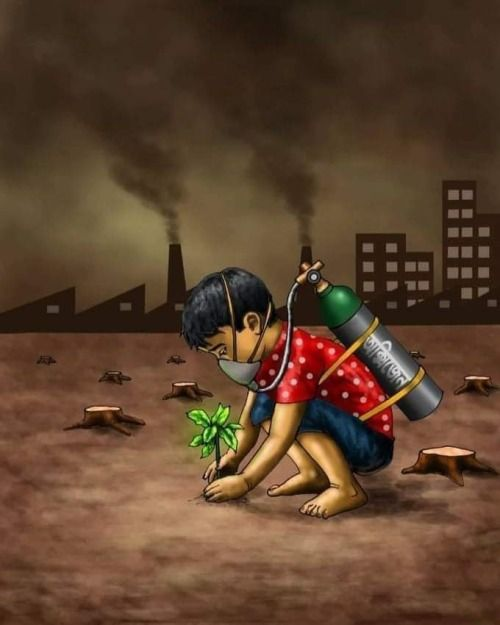
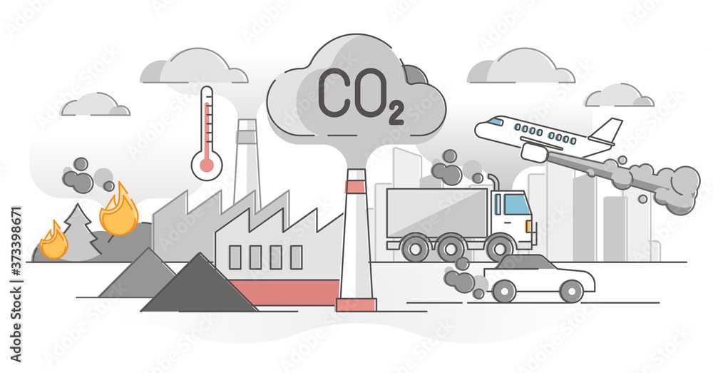
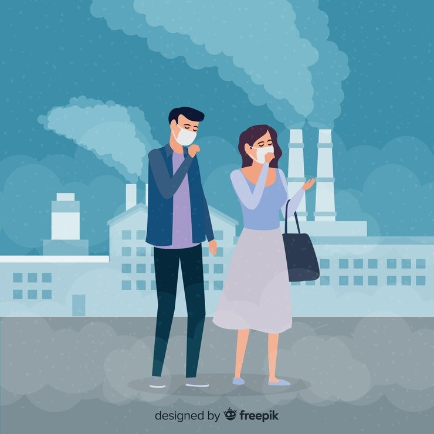
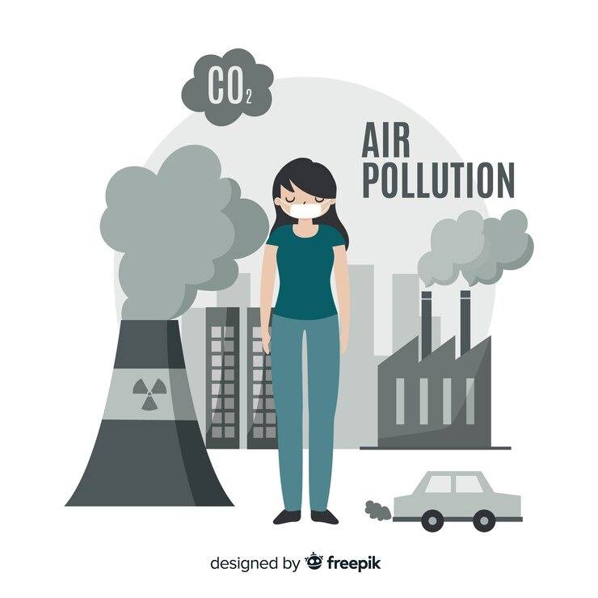
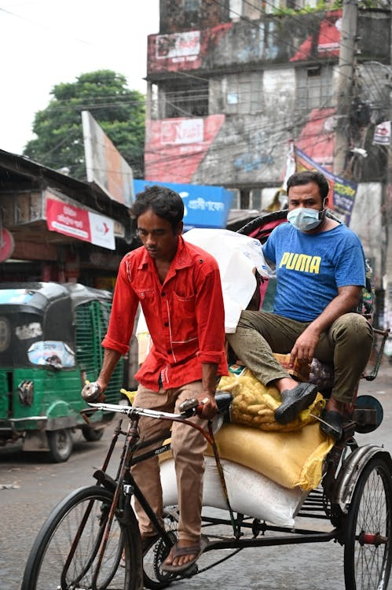

Air Pollution: Everything You Need To Know


Our Mission
At Air Quality Insight, our mission revolves around meticulously
tracking the effects of air pollution on ecosystems, human health,
and the environment. Complementing our vigilant monitoring
endeavors, we offer captivating Meditation Videos designed to foster
tranquility and self-awareness. Join our expansive community today
and embark on a transformative path toward a cleaner, healthier, and
more mindful tomorrow.
Latest Posts

roshan bhardwaj
Revealing the Effects: How Air Pollution Impacts Environmental
Health
Unveiling the Effects: How Air Pollution Impacts Environmental
Health Image Description: This image showcases a diverse array
of environments, including urban cityscapes, industrial areas,
and natural
...
landscapes, all engulfed in a haze of air pollution. The
pollutants, depicted in varying colors and densities,
symbolize the different sources and compositions of airborne
contaminants. The image underscores the detrimental impact of
air pollution on environmental health, emphasizing the
critical need for monitoring and remediation efforts. Air
pollution has emerged as a pressing concern for both urban and
rural regions, posing significant risks to ecosystems, human
health, and overall well-being. This image vividly illustrates
the pervasive effects of air pollution and underscores the
imperative of concerted action to mitigate its adverse
consequences.

roshan bhardwaj
From Air to Lungs: The Public Health Hazards of Airborne
Particulates
Have you ever paused to consider what you might be breathing in
with every breath? While air is essential for life, it's
becoming increasingly laden with airborne particulates, posing
...
significant public health risks. These particulates, often
microscopic in size, can originate from various sources such
as vehicle emissions, industrial activities, and natural
processes. When inhaled, they can penetrate deep into the
lungs and even enter the bloodstream, potentially causing
respiratory and cardiovascular issues. One of the primary
concerns with airborne particulates is their capacity to carry
and transport harmful substances. They can serve as carriers
for pollutants like heavy metals, volatile organic compounds,
and allergens, amplifying their impact on human health. As we
breathe in these particulates, we're also inhaling a cocktail
of toxins, increasing the risk of various health
complications.

roshan bhardwaj
Unveiling the Hazards of Airborne Particulates: Essential Insights
for You
Unveiling the Perils of Airborne Particulates: Critical
Knowledge for You Image Description: A close-up photograph
captures a sample of polluted air containing airborne
particulates.
...
The air appears hazy, with small particles suspended within
it. These particulates vary in color and shape, ranging from
fine dust to larger debris. The image is taken from ground
level, providing a clear view of the polluted atmosphere.
Airborne particulates have emerged as a pressing concern due
to their potential impact on environmental and public health.
These minute particles, often invisible to the naked eye, can
originate from diverse sources such as vehicle emissions,
industrial processes, and natural phenomena. Their presence in
the air poses risks to respiratory health and exacerbates
environmental degradation, underscoring the urgent need for
mitigation measures.
Research & Discoveries
Since 2000, our Climate Science Lab has diligently researched air
pollution's effects on environmental and public health. Committed to
tackling challenges posed by airborne particulates, we strive for
innovative solutions to safeguard ecosystems and communities.
Explore our ongoing efforts below.

Current Research Project
April 12, 2025
This is your Project description. Whether your work is based on
text, images, videos or a different medium, providing a brief
summary will help visitors understand the context and
background. Then use the media section to showcase your project.
Upcoming Research Project
April 12, 2025
This is your Project description. Whether your work is based on
text, images, videos or a different medium, providing a brief
summary will help visitors understand the context and
background. Then use the media section to showcase your project.

Current Research Project
April 12, 2025
This is your Project description. Whether your work is based on
text, images, videos or a different medium, providing a brief
summary will help visitors understand the context and
background. Then use the media section to showcase your project.

Previous Research Project
April 12, 2025
This is your Project description. Whether your work is based on
text, images, videos or a different medium, providing a brief
summary will help visitors understand the context and
background. Then use the media section to showcase your project.
raushankumarbhardwaj4510@gmail.com
500 Terry Francine Street, 6th Floor, San Francisco, CA 94158
7061529409